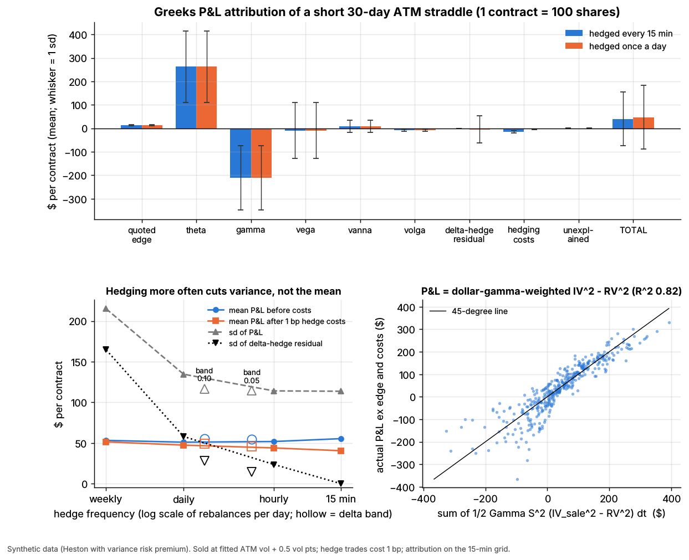

Options market making¶
TL;DR
- Quote two-sided prices on thousands of series per underlying, all read off one fitted volatility surface; 4.87 million US option series traded in 2025
[Verified].- Revenue is edge (price minus theoretical value). Inventory is held as Greeks: delta hedged within seconds, gamma and vega warehoused and shaded away through quotes.
- As an income statement: edge is revenue; theta minus gamma is realized-vs-implied volatility; vega is a mark; hedging, fees and payment for order flow are costs.
- Retail drives the flow: over 60% of volume (Bryzgalova et al. 2023), and options PFOF is two-thirds of all PFOF
[Verified]. 0DTE was 66.2% of SPX volume in July 2026[Verified]. All trades execute on 20 exchanges[Verified].- It fails on gaps and volatility spikes: one session can erase weeks of theta.
Level: Core · Read time: ~10 min · Last verified: 2026-11
| Field | Value |
|---|---|
| Family | liquidity provision |
| Edge source | liquidity provision · speed |
| Holding period | delta: milliseconds to minutes; options: hours (0DTE) to weeks |
| Counterparty: who pays and why they accept it | Retail buyers of short-dated options pay wide percentage spreads for leverage (brokers are paid PFOF); institutions buying index puts and structured-product desks hedging notes pay for immediacy and size; covered-call and put-write funds sell volatility cheaply for income. Nobody else stands ready in millions of series. |
| Universe & instruments | US single-stock, ETF and index options (SPX, SPY, QQQ, VIX); hedges in stock, ETFs, E-mini futures |
| Data required | OPRA (median 131 billion messages a day, December 2025 [Verified]), underlying feeds, dividends, borrow, rates, earnings dates, own markouts |
| Core algorithms used | M8 Options pricing and vol surfaces · M4 Quoting and inventory control · M7 Hedging algorithms · M9 Algorithmic risk controls |
| Infra intensity | very high: microsecond requoting of millions of series, continuous surface refits |
| Capacity (rough $ range) | flow-limited: industry gross trading revenue $3B–$9B a year [Estimate] (15.2B contracts in 2025 [Verified] × ~60% market-maker share × $0.30–$1.00 net capture per contract); Optiver's 2025 net trading income, all products, was €4.556B [Verified] |
| Typical Sharpe (gross vs net) | no public figures; practitioner lore puts annualized net Sharpe at 3–10 for diversified flow books and 1–3 for books that warehouse vega [Lore], with edge thinning in index options |
| Turnover | options turn over in days; hundreds to thousands of hedge trades per underlying a day [Lore] |
| Main risks / failure modes | gaps on short gamma, vol and skew spikes, informed flow, pin and assignment, wing model error, runaway quoting |
| Crowding risk | moderate: top three firms pay up to ~90% of options PFOF [Verified]; dealers positioned alike |
| Firm types that run it | electronic market makers, wholesalers ("consolidators"), floor specialists; e.g. Citadel Securities, Susquehanna, Optiver, IMC, Jane Street, Wolverine [Reported] |
| Lab | Lab 06 |
Intuition (the story in plain English)¶
An options market maker is a bookmaker and an insurer at once. It prices everything, keeps a small margin on each trade and hedges stock direction away within seconds. What it cannot lay off is volatility: how much the stock actually moves against what option prices assumed. Theta is premium earned daily, gamma losses are claims paid when the stock moves, and the quoted edge is the loading on top.
Economic rationale: why should this make money at all?¶
- Immediacy across a huge product set. Traded series rose more than sevenfold since 2012, to 4.87 million on 8,439 underliers in 2025
[Verified](SEC staff). Only surface-based pricing can cover them all. - Mostly uninformed flow. Retail favors cheap weekly options, pays an average bid-ask spread of 12.6% and loses money on average (Bryzgalova, Pavlova & Sikorskaya 2023)
[Verified]. - Structural access. Listed options must execute on an exchange. Exchanges court flow with guaranteed allocations to "directed" market makers (for example 40%), entitlements to orders of five contracts or fewer, price-improvement auctions and "marketing fees" passed to brokers
[Verified](SEC staff, April 2026). - A small, unreliable premium. End users are net long index options, so dealers are paid to warehouse them (Gârleanu, Pedersen & Poteshman 2009)
[Verified]. Since about 2010, though, delta-hedged index options earn near-zero CAPM alpha and dealers' net SPX gamma is zero or positive (Dew-Becker & Giglio 2025)[Verified]. The money is mostly spread (premium: see the volatility risk premium dossier).
The trade, step by step¶
- Imply the forward from put-call parity; fit one smile per expiry into an arbitrage-free surface (M8).
- Compute theo and Greeks for every series.
- Quote theo ± a half-width that grows with vega × surface uncertainty, expected adverse selection (M5) and fees; lean both sides against book Greeks (M4).
- On a fill, book edge = (price − theo) × 100 × contracts.
- Hedge delta in stock, ETF or futures, at once or when net delta leaves a band (M7).
- Manage vega by expiry, gamma and skew; offload concentrations through quote skew, complex orders or other dealers.
- Enforce limits and kill switches (M9); manage pin risk and early assignment (calls before ex-dividend); explain P&L daily (L1).
Worked example with numbers¶
Illustrative. Stock at $100; a 21-trading-day at-the-money call has theo $2.88 at 25% implied vol. A retail order buys 20 calls at $2.93. Short 20 contracts, the book has delta −1,029 shares, gamma −110.5 shares per $1, vega −$230 per vol point and theta +$137 a day.
| Line | Calculation | $ |
|---|---|---|
| Edge at the fill | (2.93 − 2.88) × 100 × 20 | +100 |
| Exchange fee (illustrative $0.30 a contract) | 0.30 × 20 | −6 |
| PFOF (illustrative $0.40 a contract) | 0.40 × 20 | −8 |
| Delta hedge: buy 1,029 shares, 1¢ half-spread | 1,029 × 0.01 | −10 |
| Net at the fill | +76 | |
| Quiet next day: stock +1%, IV flat | theta +137, gamma ½ × (−110.5) × 1² = −55 | +82 |
| Breakeven move | ½ × 110.5 × ΔS² = 137 gives ΔS = $1.57 = 25%/√252 | 0 |
| Gap: stock +5%, IV +3 points | gamma −1,381, vega −691, theta +137 | −1,935 (−1,743 fully repriced) |
One gap costs about 13 days of theta. The $192 between the Greek estimate and full repricing is what a P&L explain books as "unexplained".
Signals and algorithms under the hood¶
Surface: M8. Width and lean: M4, M5. Hedging: M7. Limits: M9. Daily explain: L1.
# One quoting-and-hedging cycle for one underlying (simplified). fit_smile, delta_hedge_pnl
# and greeks_attribution are Lab 06's CORE ALGORITHM functions; position Greeks are negative when short.
smiles = {T: fit_smile(np.log(K / F), iv_mid, T, method="svi") # M8: one raw-SVI fit per expiry
for T, (K, iv_mid) in chain_by_expiry.items()}
for opt in series: # thousands of strikes x expiries
vol = smiles[opt.T](np.log(opt.K / F))
theo, g = bs_price_and_greeks(F, opt.K, opt.T, vol) # per share: delta, gamma, vega
half = max(min_tick, vol_unc * g["vega"] + tox[opt] + fee) # M5: wider where flow is toxic
lean = -k_vega * book["vega"] * g["vega"] # M4: short vega -> raise both prices
quote(opt, bid=theo - half + lean, ask=theo + half + lean)
# On a fill, premium > 0 if we sold; position value at theo is < 0 when short.
quoted_edge = premium + position_value_at_theo # = (fill - theo) x 100 x qty on a sale
# Lab 06 bands are per share of one straddle; a real book sets the band in shares or $ delta.
h = delta_hedge_pnl(spot_path, book_delta_path, band=delta_band, cost_bps=1.0) # M7
pnl = greeks_attribution(book_value, spot_path, iv_path, book_greeks, h["shares"], # L1
dt, premium, h["costs"])
# keys: quoted_edge, theta, gamma, vega, vanna, volga, delta_hedge_residual, hedging_costs, unexplained

Lab 06, synthetic data. Notice that the quoted edge is a sliver next to theta and gamma, that hedging more often cuts the variance of P&L but not its mean, and that trade P&L tracks dollar-gamma-weighted implied minus realized variance.
Synthetic lab results (398 short 30-day straddles sold at fitted vol + 0.5 points): mean edge $13.1 a straddle against theta +$262.6 and gamma −$210.8. Hedging every 15 minutes costs $14.9, more than the edge; a ±0.10 delta band matches hourly hedging's P&L standard deviation ($117 vs $114) with a quarter of the rebalances.
Implementation choices that matter¶
- Surface model. SVI-type fits extrapolate sanely into the wings, where retail lottery tickets trade; in Lab 06 a quadratic missed the wings by 1.25 vol points, SVI by 0.12 (synthetic). Many desks use smile-adjusted deltas
[Lore]. - Where to quote tightly. Quoted spreads widened from 2012 to 2025 in nearly all but the top-10 underliers
[Verified]. - Flow. Consolidator or screen-only. Single-leg auctions gave retail marketable orders price improvement 22–89% of the time, the electronic book 0–13%
[Verified]. - Complex orders. Multi-leg orders were the second and fourth most common retail execution types in December 2025
[Verified].
P&L decomposition¶
Illustrative income statement, mid-size book: 500,000 contracts a day, 126 million a year [Estimate].
| Line (accounting analogue) | $ per contract | $M per year |
|---|---|---|
| Revenue: edge vs theo at the fill | +1.60 | +201.6 |
| Cost of revenue: adverse selection (5-minute markout) | −0.55 | −69.3 |
| Inventory gain: theta minus gamma | +0.10 | +12.6 |
| Fair-value marks: vega and skew | 0 on average | ±40 |
| Hedging costs | −0.15 | −18.9 |
| Exchange fees net of rebates | −0.25 | −31.5 |
| PFOF paid to brokers | −0.20 | −25.2 |
| Clearing and regulatory fees | −0.04 | −5.0 |
| Technology, OPRA data, people | −0.12 | −15.1 |
| Loss reserve: gap days, amortized | −0.10 | −12.6 |
| Net | +0.29 | +36.5 |
Most gross edge leaks to informed flow, venues and brokers. The vega line does not move the mean, but it decides the quarter.
Evidence¶
- Growth. 15.2 billion contracts in 2025, +26%, a sixth straight record
[Verified]. Q3 2026 averaged 70.6 million a day; 0DTE was ~36% of all volume[Verified](Cboe). - PFOF. SEC staff (April 2026): consolidators handle virtually all retail options orders; options PFOF is two-thirds of all PFOF; the top three providers pay up to ~90%
[Verified]. Options PFOF remains legal; the SEC withdrew its 2022 order-auction proposal in June 2025[Reported]. Q3 2025 retail-flow payments rose 40% year on year, led by Citadel Securities and IMC[Reported]. - Firms. Citadel Securities says it holds about 30% of US listed options
[Reported](self-reported). Rule 606 analyses name Dash/IMC, Susquehanna, Jane Street and Wolverine as major liquidity providers[Reported]; Optiver is hiring to compete in US single-stock options[Reported](Bloomberg). - Spreads. Median effective spread 1.9% for equity options, 1.4% for ETF options, in 2025
[Verified].
Capacity, crowding and decay¶
Capacity is set by flow, so firms compete with PFOF, exchange incentives and tighter quotes. The business concentrated: from 2015 to 2021 the number of broker-dealers reporting options market-making revenue fell, mostly among small-capital firms [Verified]. Fragmentation raises fixed costs: 18 exchanges each held more than 1% in 2025, and two more launched in Q3 2026 [Verified]. Edge is thinnest in index and top-ETF options.
How it fails¶
- Gaps. Short gamma loses with the square of the move (worked example).
- Vol and skew spikes. Short vega is marked down at once; put skew steepens as customers buy puts.
- Informed flow before news; markouts catch it late (M5).
- Pin and assignment. Unknown exercise near the strike can leave an unhedged position over a weekend.
Episodes: 2018-02-05, VIX +115.6% in a day [Verified] (failure gallery). 2024-08-05, bid-ask spreads on deep out-of-the-money puts exceeded 80% of mid before the open as market makers widened; the quote-based VIX touched ~66 [Verified] (BIS). 2025-04-03 to 04-09, the S&P 500 moved −4.8%, −6.0%, then +9.5%; the VIX closed at 52.33 on 8 April [Verified] (Cboe data), and options volume first topped 100 million contracts on 4 April [Verified].
Textbook vs how it's done today¶
- Textbook: continuous hedging removes risk. Practice: discrete, band-based hedging, because costs scale with frequency (Leland 1985; Whalley & Wilmott 1997)
[Verified]. - Textbook: price each option with a model. Practice: price off a fitted surface and skew by inventory (Stoikov & Sağlam 2009)
[Verified]. - Textbook: spread from noise traders. Practice: flow bought via PFOF and exchange allocations
[Verified]. - Textbook: dealers earn a volatility premium. Practice: near zero since ~2010 (Dew-Becker & Giglio 2025)
[Verified].
Practitioner references: Natenberg (2015) on pricing and Greeks; Sinclair (2013) on volatility trading.
Variants and neighbours¶
Variants: index and 0DTE books, single-stock earnings books, VIX options, floor specialists, wholesalers. Neighbours: equity market making, retail flow internalization, dispersion, ETF, futures and options linkages.
Diagram¶
flowchart LR
MD["OPRA and underlying feeds"] --> SF["Surface fit per expiry (M8)"]
SF --> TV["Theo and Greeks per series"]
TV --> QT["Quote: theo plus or minus width,<br/>leaned by book Greeks (M4, M5)"]
QT --> FL["Fill: edge booked"]
FL --> DH["Delta hedge in stock or futures (M7)"]
DH --> BK["Book Greeks: gamma, vega by expiry, skew"]
BK --> RC{"Limits OK? (M9)"}
RC -->|"yes"| QT
RC -->|"no"| WD["Widen, pull quotes, trade out risk"]
BK --> PL["End-of-day P&L explain (L1)"]sequenceDiagram
participant R as Retail client
participant B as Broker
participant C as Consolidator (market maker)
participant X as Options exchange
participant O as OCC
R->>B: Buy 20 calls
B->>C: Route order, receive PFOF
C->>X: Send to price-improvement auction or book
X->>C: Allocation at the best price
X->>O: Trade reported for clearing
C->>C: Book edge, hedge deltaHow practitioners talk about it¶
- "We're short gamma into the print." → Loses if earnings move the stock more than implied.
- "Theta paid for the gamma this week." → Realized came in below implied.
- "Lean the vega." → Skew quotes so customers take risk off the book.
- "Markouts on that broker went negative." → The flow became informed.
- "We hedge on a 10-delta band." → Rebalance only past a threshold.
- "Model risk lives in the wings." → Far strikes are extrapolated.
Myths vs reality¶
- Myth: they bet on direction. Reality: delta is hedged in seconds; they bet on flow and realized vs implied vol.
- Myth: PFOF obviously harms retail. Reality: contested: auctions improve prices far more than the book; one study links higher PFOF to less improvement, and critics dispute its method
[Verified](SEC staff summary). - Myth: 0DTE is a retail casino. Reality: market makers have the largest 0DTE footprint, above 190 million contracts a month
[Verified].
Questions you could ask a quant about this¶
- Basic: How many underliers do you quote, and what do you hedge with?
- Informed: How do you split P&L between edge, theta-gamma and vega?
- Informed: How do markouts differ between auction and screen flow?
- Sharp: How do your deltas account for the smile?
- Sharp: Was 2025-04-04 a gamma or a vega loss?
- Sharp: 🔒 Vega limits per expiry, and PFOF paid per contract?
Go deeper¶
Math: theta-gamma identity, hedging error and the Leland band
With \(r = 0\), \(\Theta = -\tfrac12 \Gamma S^2 \sigma_i^2\), so a delta-hedged short option earns per step
P&L is dollar-gamma-weighted implied minus realized variance, so it is path-dependent (Lab 06: R² 0.82). Hedging error falls roughly as \(1/\sqrt{N}\) in rebalances (Boyle & Emanuel 1980). Leland (1985): a writer hedging every \(\Delta t\) at round-trip cost \(k\) should price at
At \(\sigma = 20\%\) and \(k = 2\) bp, 15-minute hedging needs ~0.6 vol points of extra edge and daily hedging ~0.13. Lab 06 quoted 0.5, so 15-minute hedging lost money net.
Related pages¶
- M8 Options pricing and vol surfaces for market making
- M7 Hedging algorithms
- M4 Quoting and inventory control
- M9 Algorithmic risk controls
- Walkthrough: an options market maker
- Volatility risk premium and vol arb
- Retail flow internalization
- Venues and retail flow
- Firm profiles: Citadel Securities · Susquehanna · Optiver · IMC
Sources¶
- [Verified] SEC Division of Trading and Markets, Office of Analytics and Research (2026-04-09). "Roundtable on Options Market Structure: Supporting Data." https://www.sec.gov/files/roundtable-options-market-structure.pdf (accessed 2026-11)
- [Verified] Cboe (2026-01-22). "The State of the Options Industry: 2025." https://www.cboe.com/insights/posts/the-state-of-the-options-industry-2025 (accessed 2026-11)
- [Verified] Cboe (2026-10-19). "State of the Options Industry Q3 2026: Volume Growth Concentrated in Index and ETF Options." https://www.cboe.com/insights/posts/state-of-the-options-industry-q-3-2026-volume-growth-concentrated-in-index-and-etf-options (accessed 2026-11)
- [Verified] Cboe (2026-08). "Market Metrics That Matter: Derivatives July 2026 Volume Highlights." https://www.cboe.com/insights/posts/market-metrics-that-matter-derivatives-july-2026-volume-highlights (accessed 2026-11)
- [Verified] Cboe Global Markets. VIX and SPX daily history files (2025 values are our reading of the data). https://cdn.cboe.com/api/global/us_indices/daily_prices/VIX_History.csv (accessed 2026-11)
- [Verified] Bryzgalova, S., Pavlova, A. & Sikorskaya, T. (2023). "Retail Trading in Options and the Rise of the Big Three Wholesalers." Journal of Finance 78(6), 3465–3514. https://doi.org/10.1111/jofi.13285 (accessed 2026-11)
- [Verified] Gârleanu, N., Pedersen, L. H. & Poteshman, A. M. (2009). "Demand-Based Option Pricing." Review of Financial Studies 22(10), 4259–4299. https://doi.org/10.1093/rfs/hhp005 (accessed 2026-11)
- [Verified] Dew-Becker, I. & Giglio, S. (2025). "The Decline of the Variance Risk Premium: Evidence from Traded and Synthetic Options." Federal Reserve Bank of Chicago WP 2025-17. https://doi.org/10.21033/wp-2025-17 (accessed 2026-11)
- [Verified] Stoikov, S. & Sağlam, M. (2009). "Option market making under inventory risk." Review of Derivatives Research 12(1), 55–79. https://doi.org/10.1007/s11147-009-9036-3 (accessed 2026-11)
- [Verified] Leland, H. E. (1985). "Option pricing and replication with transactions costs." Journal of Finance 40(5), 1283–1301. https://doi.org/10.1111/j.1540-6261.1985.tb02383.x (accessed 2026-11)
- [Verified] Whalley, A. E. & Wilmott, P. (1997). "An asymptotic analysis of an optimal hedging model for option pricing with transaction costs." Mathematical Finance 7(3), 307–324. https://doi.org/10.1111/1467-9965.00034 (accessed 2026-11)
- [Verified] Boyle, P. P. & Emanuel, D. (1980). "Discretely adjusted option hedges." Journal of Financial Economics 8(3), 259–282. https://doi.org/10.1016/0304-405X(80)90003-3 (accessed 2026-11)
- [Verified] Todorov, K. & Vilkov, G. (2024-10-29). "Anatomy of the VIX spike in August 2024." BIS Bulletin 95. https://www.bis.org/publ/bisbull95.htm (accessed 2026-11)
- [Verified] Optiver (2026). "Optiver reports robust financial results for 2025." https://optiver.com/optiver-reports-robust-financial-results-for-2025 (accessed 2026-11)
- [Reported] Citadel Securities. "Options" (firm page; self-reported market share). https://www.citadelsecurities.com/what-we-do/options/ (accessed 2026-11)
- [Reported] Global Trading (2025-11-11). "Citadel Securities, IMC paid US$420m for retail flows as options surged." https://www.globaltrading.net/?p=40423 (accessed 2026-11)
- [Reported] Bloomberg Government (2026-05). "Optiver Boosts Stock Option Competition for Citadel, Susquehanna." https://news.bgov.com/capital-markets/optiver-boosts-stock-option-competition-for-citadel-susquehanna (accessed 2026-11)
- [Verified] Natenberg, S. (2015). Option Volatility and Pricing: Advanced Trading Strategies and Techniques, 2nd ed. McGraw-Hill Education. ISBN 9780071818773. https://openlibrary.org/search?q=9780071818773 (accessed 2026-11)
- [Verified] Sinclair, E. (2013). Volatility Trading, 2nd ed. Wiley. https://doi.org/10.1002/9781118662724 (accessed 2026-11)